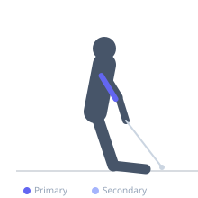
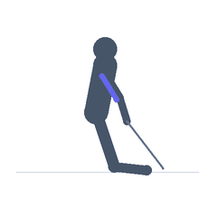

Exercise guide / High Cable Triceps Extension — Kneeling Drop Set
High Cable Triceps Extension — Kneeling Drop Set
A triceps overhead cable extension performed from the kneeling position facing away from a high pulley, executed as a drop set where the weight is immediately reduced after reaching failure and the exerciser continues the set. The kneeling position provides a stable base, the high cable angle stretches the long head of the triceps maximally, and the drop set structure maximizes time-under-tension and metabolic stress for triceps hypertrophy.
Primary muscles
triceps long head
triceps lateral head
triceps medial head
Secondary muscles
Stabilizers
transverse abdominis
Equipment
Cable Machine (High Pulley)


Starting position
- Kneel on the floor facing away from a high cable pulley. Hold a rope attachment behind the head with both hands, elbows pointing upward and slightly forward.
Setup
- Set up two weight settings in advance for the drop: a heavier starting weight and a lighter follow-up. Some machines allow quick pin changes; otherwise have a training partner help reduce the weight.
Steps
- Step 1: Begin kneeling with the rope held behind the head. Extend the elbows to full lockout, pressing the rope forward and downward.
- Step 2: Squeeze the triceps at full extension, then slowly return to the bent-elbow start.
- Step 3: Continue until failure at the starting weight.
- Step 4: Immediately reduce the weight (drop) and continue the set for additional reps to secondary failure.
Coaching cues
- Keep the elbows tight — do not let them flare during the press
- Squeeze the triceps at lockout — the constant tension from the high cable makes this very effective
- The drop set should be a smooth transition — have the lighter weight ready to go immediately
Breathing
- Exhale during the extension (press). Inhale during the return.
Range of motion
- Full elbow extension at the bottom. Full elbow flexion (rope behind head) at the top.
Tempo
- 2s extension, 1s lockout, 3s eccentric return. Full ROM on each rep of both the initial and drop set.
Common mistakes
- Flaring the elbows wide — keep them in line with the head, not splayed out
- Moving the upper arm during the extension — only the forearms should move
- Allowing the torso to lean excessively forward to assist the press
Safety
- Ensure quick weight reduction is possible before beginning — plan the drop logistics first
- Avoid excessive neck strain — the rope attachment should not press on the neck
Training
- hypertrophy: 8–15 reps
- hypertrophy: 2–3 sets
- Rest: {'hypertrophy': 90}